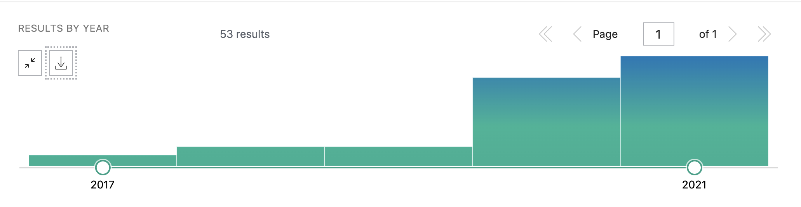

Introduction to Nextflow
Enabling scalable and reproducible scientific workflows using software containers. www.nextflow.io.
What is Nextflow?
Nextflow is a domain specific language (DSL) for workflow orchestration that stems from Groovy. It enables scalable and reproducible workflows using software containers. It was developed at the CRG in the Lab of Cedric Notredame by Paolo Di Tommaso. The Nextflow documentation is available here and you can ask help to the community using their gitter channel

In 2020, Nextflow has been upgraded from DSL1 version to DSL2. In this course we will use exclusively DSL2.
What is Nextflow for?
It is for making pipelines without caring about parallelization, dependencies, intermediate file names, data structures, handling exceptions, resuming executions, etc.
It was published in Nature Biotechnology in 2017.

There is a growing number of PubMed publications citing Nextflow.
{kind=link}
Here you have a curated list of Nextflow pipelines and a collection of pipelines written collaboratively in the framework of the NF-core project.
Main advantages
Fast prototyping
You can quickly write a small pipeline that can be expanded incrementally. Each task is independent and can be easily added to other. You can reuse scripts without re-writing or adapting them.
Reproducibility
Nextflow supports Docker and Singularity containers technology. Their use will make the pipelines reproducible in any Unix environment. Nextflow is integrated with GitHub code sharing platform, so you can call directly a specific version of a pipeline from a repository, download and use it on-the-fly.
Portability
Nextflow can be executed on multiple platforms without modifiying the code. It supports several schedulers such as SGE, LSF, SLURM, PBS, HTCondor and cloud platforms like Kubernetes, Amazon AWS, Google Cloud.

Scalability
Nextflow is based on the dataflow programming model which simplifies writing complex pipelines. The tool takes care of parallelizing the processes without additionally written code. The resulting applications are inherently parallel and can scale-up or scale-out transparently; there is no need to adapt them to a specific platform architecture.
Resumable, thanks to continuous checkpoints
All the intermediate results produced during the pipeline execution are automatically tracked. For each process a temporary folder is created and is cached (or not) once resuming an execution.
Workflow structure
The workflows can be represented as graphs where the nodes are the processes and the edges are the channels. The processes are blocks of code that can be executed - such as scripts or programs - while the channels are asynchronous queues able to connect processes among them via input / output.

Processes are independent from each another and can be run in parallel, depending on the number of elements in a channel. In the previous example, processes A, B and C can be run in parallel and only when they ALL end the process D is triggered.
Installation
Note
You need at least the Java version 8 for the Nextflow installation.
Tip
You can check the version fo java by typing:
java -version
Then we can install Nextflow with:
curl -s https://get.nextflow.io | bash
This will create the nextflow executable that can be moved, for example, to /usr/local/bin.